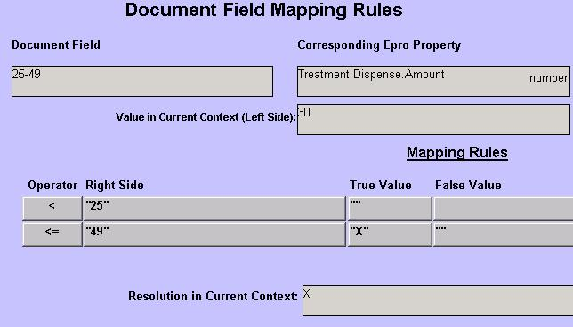

| Solution: |
Examples of using literal values to print strings Lic # %Treatment.LastOrderedBy.MedicalLicenseNumber% DEA # %Treatment.LastOrderedBy.DEANumber% If-Then mapping (or between value mapping)
Treatment.Order(-1).Encounter.EncounterLocation.OfficeName  |
| Details: | |
| Symptoms: |
| ID: 040900916325443 | Last Modified: 01/09/2009 04:32:54 PM |